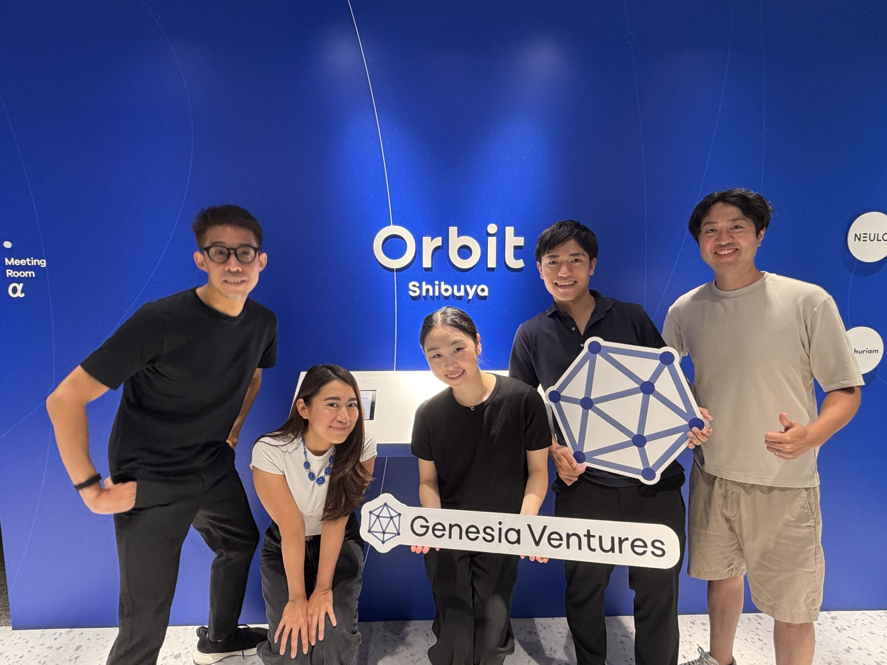

Women. Innovation.
Working in venture capital, I saw how the people deciding which ideas receive capital also shape which ideas have the opportunity to grow. Yet, I rarely saw women represented in those decisions or among the founders we backed. It made me passionate about creating spaces where more women can shape innovation, which is what I aim to do at Foundess.
COO @ Foundess
A global community supporting 30K+ female founders across 15 countries. These founders' companies collectively represent over $2 billion in valuation. Backed by Anthropic, Notion, SVB, and more. Sponsored by Khosla Ventures, J.P. Morgan, Lowenstein, and more.
Learn more here: foundess.com
Interested in Sponsoring? Book a meeting here
Feel free to reach out: anna@foundess.com
Intern @ Genesia Ventures
01
Portfolio Company Analysis
Analyzed Genesia's portfolio companies to identify whether there is a common founder pipeline in Japan—examining founders' educational and professional backgrounds and uncovering recurring patterns and similarities.
Analyzed Genesia's portfolio companies to identify whether there is a common founder pipeline in Japan—examining founders' educational and professional backgrounds and uncovering recurring patterns and similarities.
02
AI Associate
Built an AI-powered deal-sourcing pipeline that identifies early-stage startups matching Genesia's ideal investment profile and automatically notifies partners of promising opportunities. Received positive feedback from the CEO, with plans to implement the system across the firm.
Built an AI-powered deal-sourcing pipeline that identifies early-stage startups matching Genesia's ideal investment profile and automatically notifies partners of promising opportunities. Received positive feedback from the CEO, with plans to implement the system across the firm.
03
Community
Proposed VC programs inspired by the U.S. startup ecosystem to help strengthen Japan's founder and startup community. Launched an event for ex-McKinsey founders in Japan. Actively preparing additional events and community programs 👀
Proposed VC programs inspired by the U.S. startup ecosystem to help strengthen Japan's founder and startup community. Launched an event for ex-McKinsey founders in Japan. Actively preparing additional events and community programs 👀
